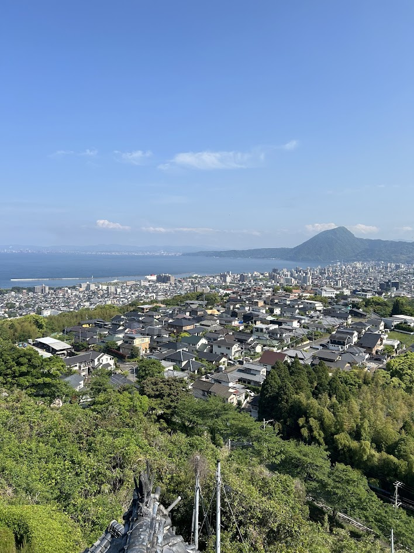

大分県に位置する別府市は、日本を代表する温泉地の一つとして知られ、豊富で魅力的な温泉により全国的に高い人気を誇っています。約2,800もの源泉を有し、多彩な温泉体験を楽しむことができます。
山と海に囲まれた別府は、豊かな自然景観と深い文化的伝統が調和する街です。主な観光名所としては、観賞を目的とした色鮮やかな温泉「地獄めぐり」や、温泉の蒸気を利用して食材を調理する伝統的な「地獄蒸し」などが挙げられます。

日本は火山地帯に位置しているため、多くの天然温泉（温泉）があります。温泉は、地下水がマグマによって温められ、地表に湧き出ることで形成されます。 古くから温泉文化が根付いており、江戸時代には健康や休息のために広く利用されるようになりました。 現在では、温泉は自然や伝統、日本料理や旅館文化を楽しめる観光名所としても人気があります。
露天風呂は屋外にある温泉で、自然や景色を楽しめることが特徴です。 開放感があり、落ち着いた雰囲気の中でリラックスできるよう設計されています。
内湯はホテルや旅館の建物内にある温泉です。 露天風呂とは異なり屋内にあり、宿泊客に快適さと便利さを提供しています。
温泉の伝統には、敬意や共同の快適さを大切にするためのさまざまなルールや習慣があります。一般的に、温泉は男性用と女性用に分かれており、裸で入浴します。温泉に入る前には、かけ湯や洗い場で体を洗い、利用者全員が清潔な湯を楽しめるようにします。また、静かな環境が保たれており、日本文化における礼儀や調和の価値観が表れています。


地獄蒸しは、温泉の蒸気を利用して食材を調理する別府の伝統的な調理法です。 江戸時代から親しまれており、野菜や肉、魚などを油を使わずに調理でき、天然のミネラルとほのかな塩味を楽しむことができます。
調理には70℃を超える温泉蒸気を100％利用し、火やガスを必要としません。 高温の蒸気によって食材本来の甘みや旨味が引き出され、地獄蒸しは別府ならではの持続可能な食文化として知られています。


別府地獄めぐりでは、「地獄」と呼ばれるさまざまな温泉を見ることができます。 全部で7つの地獄があり、それぞれ異なる色や温度、自然の特徴を持っています。 また、足湯や温泉の蒸気を使った料理、観光用の見学エリアもあります。 主な地獄は以下の通りです。
海地獄は、別府地獄めぐりの中で最も有名で大きな温泉です。 コバルトブルーの美しいお湯が海のように見え、温度は約98℃に達します。
鬼石坊主地獄は、733年から記録に残る歴史ある温泉です。 灰色の熱い泥が泡立つ様子が、坊主頭の僧侶に似ていることで知られています。
血の池地獄は、日本最古の天然地獄とされています。 鉄分を多く含む粘土によって、温泉の水は鮮やかな赤色をしています。 また、この温泉の泥は皮膚病の治療を助ける薬用軟膏にも利用されています。
龍巻地獄は、天然の間欠泉で有名な別府の地獄の一つです。 一定の間隔で熱湯と蒸気を高く噴き上げ、約30メートルに達することもあります。 噴出の勢いを調整するために、泉の上には石造りの構造物が設置されています。